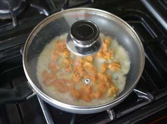

Chatamari Recipe:Authentic Newari Food

In Nepal, chatamari is a highly popular food, particularly among the Newari community.It is edible both with and without toppings. It tastes fantastic even now.It may not taste like pizza, but it sure looks like one.It features a lovely topping and a very thin shell composed of rice flour.
The topping of chatamari is juicy and soft, while the foundation is slightly crispy.This is not a vegetarian recipe for chatamari.Using this recipe, you can also create basic chatamari.If you're making simple chatamari, omit the topping; the rest stays the same.
So let’s get started
INGREDIENTS
2 cup of rice flour
3/4 cup of water
250 gram minced meat
(chicken/turkey/lamb/buffalo)
4 eggs
1/2 cup chopped onion
1/4 cup chopped coriander
1/2 cup chopped tomato
1 tbsp green diced chilli
1 tbsp green peas
1 tsp garlic and ginger paste
2 tsp cumin and coriander powder
1 tsp turmeric powder
1 tsp paprika powder
1 tsp meat masala/curry powder
1 tablespoon oil per Chatamari
Salt to taste

DirectionsStep 1Mix rice flour with water until we see a thin batter in a bowl. Keep in mind it should not be too runny. Add water slowly if needed. Step 2In another bowl, mix meat with coriander, garlic and ginger paste, cumin and powder, turmeric powder, paprika powder, meat masala and salt. Step 3Heat 1 tbsp spoon over medium-high heat in a pan Step 4Once the oil is hot, pour the thin batter like a pancake with a ladle and cook for 3-5 seconds. Step 5Add a portion of the other mixtures on top. Step 6 Sprinkle onion, tomato, coriander, green chilli and the egg yolk on the top. Step 7Then cover it with a lid on a low flame. Cook it for 3 to 4 mins. Make sure the egg is cooked to the desired consistency. Step 8Chatamari is ready to serve, cut it like a pizza and enjoy. |